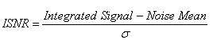
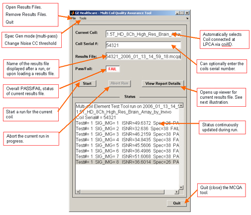
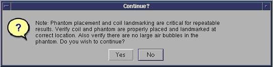
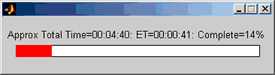
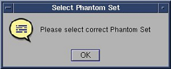
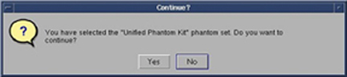
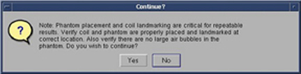
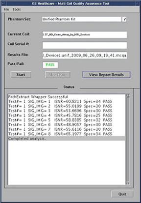

Operating Documentation
Direction 5440001-3, Rev# 6
Signa HDxt Service Methods
Module Version 8.0, Version Date 5/3/10
Operating Documentation |
| Required Persons | Preliminary Reqs | Procedure | Finalization |
|---|---|---|---|
| 1 | Not Applicable | 20 minutes per coil | N/A |
The Multi-Coil Quality Assurance (MCQA) Tool is a new tool that will simplify data acquisition and analysis of the signal-to-noise ratio (SNR) for surface coils. It will aid in detecting dead coil elements, as well as developing improved integrated signal-to-noise ratio (ISNR) specifications for all Multi-coils, independent of scanner instabilities. The tool does not rely on ROI placement as other SNR tools have in the past. Instead, it chooses slice locations based on coil geometry, acquires one Spin Echo Image, and turns off RF to gather a noise image. The noise mean of the 2D-noise-only image is subtracted from the 2D intermediate image.
The summed signal of the [2D intermediate image – noise mean] is calculated, and then this signal is divided by the Standard Deviation of the Noise of all pixels of the noise-only-image, to give the ISNR. See the formula below.
Illustration 1: ISNR Formula

The MCQA Tool Graphical User Interface has been updated, which includes provisions that support the Unified Phantoms for coils. The following steering instructions will guide you to the appropriate section for the version of MCQA Tool running on your system.
For Systems running software version 15.0 M4 SP1 go to: Multi-Coil Quality Assurance Tool – Old Version Screen I/O.
For Systems with software version 15.0 M4 SP2 or higher go to: Multi-Coil Quality Assurance Tool – New Version Screen I/O.
| NOTE: | The New Version Screen I/O supports the introduction of the Unified Phantom Set. |
| Item | Qty | Effectivity | Part# | Manufacturer | |
|---|---|---|---|---|---|
| Coils and Phantoms for all coils to be tested are required. | - | - | - | ||
All RF coil related tests must be run on a system that is well-calibrated and passing all system tests. The system should have passed “Install In Spec” (IIS), especially white pixel, correlated noise, and MCR (Multi-Coil-Receive) tool.
If possible, run the Multi-Coil Chain Receive (MCRv) tool to validate receive chain function before running the MCQA tool. If the MCRv tool has missing or failed results, the MCQA tool will detect it and a pop-up will appear, asking if you want to continue.
From Common Service Desktop (CSD) select [Image Quality], Multi-Coil QA Tool and Click here to start this tool. The Coil Log Viewer will open as shown in Illustration 2.
Illustration 2: Multi-Coil QA Tool

The current coil field will be automatically filled in, based on the Coil ID of the coil connected to the LPCA. The names listed will be the physical coil names for each coil.
| NOTE: | Coil names are specific to the coil connector. Legacy coils should not have reference to the connector, but any new coil with the Bendix connector will have an HDx/HDe identifier in the coil name. During download, the tool should detect if the wrong coil was selected, and give an error. The user will then have the ability to pick again. |
Enter the Coil Serial #: into the provided field.
From the MCQA Tool GUI, press the [Start] button to begin the test.
A warning dialog (see Illustration 3) will be shown, asking the user to verify the coil/phantom setup and position. Ensure the phantom and coil setup is proper and select [Yes] to continue.
The Status window of the MCQA Tool GUI will continuously update to give information on what the tool is doing at any point in time.
A time bar will display, showing approximate total test time, elapsed time and percent complete, as shown in Illustration 4.
Illustration 3: Phantom/Coil, Landmark Warning Popup

Illustration 4: Status and Time Bar

Once the test has completed, the name of the Results file will be listed, along with the Pass/Fail status of the test.
Select the [QUIT] button to exit out of the MCQA Tool.
Remove the coil and phantom from the system.
All RF coil related tests must be run on a system that is well-calibrated and passing all system tests. The system should have passed “Install In Spec” (IIS), especially white pixel, correlated noise, and MCR (Multi-Coil-Receive) tool.
If possible, run the Multi-Coil Chain Receive (MCRv) tool to validate receive chain function before running the MCQA tool. If the MCRv tool has missing or failed results, the MCQA tool will detect it and a pop-up will appear, asking if you want to continue.
From Common Service Desktop (CSD) go to Service Browser and select [Image Quality], [Multi-Coil QA Tool] and then [Click here to start this tool] as shown in Illustration 5.
Illustration 5:

| NOTE: | Upon start-up the MCQA Tool will attempt to identify the coil that is connected to the system. If successful it will be automatically listed it in the Current Coil field. See example in Illustration 6. If the coil is not recognized then a message window appears indicating the coil needs to be configured. |
Illustration 6: Current Coil Field

| NOTE: | If a recognized coil has the capability of using either a Legacy Phantom Set or a Unified Phantom Set, a pop-up will be displayed prompting the user to make a selection. See Illustration 7 below. |
Click on [OK] to continue.
Illustration 7: Confirmation Pop-Up

Follow the guidelines in the note for Phantom Set selection. See Illustration 8 for an example of an active pull down list for phantom set selection.
| NOTE: | The Phantom Set field varies depending upon the coil that is plugged into the system. If the Phantom Set field provides an active pull down list, then select the phantom choice based on the phantoms used during setup for the MCQA test as described in the coil’s service manual. If the Phantom Set field is grayed out (making it unselectable), then the tool has automatically selected the phantom set based on the coil used. |
Illustration 8: Phantom Set Drop-Down Menu

The current coil field will be automatically filled in, based on the CoilID of the coil connected to the LPCA. Enter the serial number of the coil being tested in the Coil Serial Number field.
Click on [Start] to begin the automated test as shown in Illustration 9. Depending on the number of test locations (complexity of the coil) the test may take from 3 to 20 minutes.
Illustration 9: Begin the Automated Test

A confirmation pop-up displays, asking to continue. Click on [Yes]. See Illustration 10.
Illustration 10: Confirmation Pop-Up

Upon start-up, a message stating, Phantom placement and coil landmarking are critical for repeatable results will appear. If the landmark has been set correctly and there are no air bubbles in the phantom, click [Yes] to continue. See Illustration 11.
Illustration 11: Startup Message

| NOTE: | The Status window of the MCQA Tool GUI will continuously update to give information on what the tool is doing at any point in time. A time bar (Illustration 12) will appear, showing approximate total test time, elapsed time and percent complete. Once the test has completed, the name of the Results file will be listed, along with the Pass/Fail status and the results of the test in the MCQA Tool GUI. |
Illustration 12: Status Window

When the test is complete, test results display on the screen (Illustration 13). The PASS/FAIL status shows PASS if all coil elements are functioning properly. If any coil elements display FAIL, call the GE Service Representative for coil repair.
Illustration 13: Test Results

The MCQA Tool GUI displays Fail for reasons including, but not limited to:
Bad coil element
Incorrect phantom used for the test
Incorrect positioning/placement of the phantom
Click on [Quit] button to exit MCQA Tool.
After running the Multi-Coil QA test, select [View Report Details] to review the results. To review past results, select File, Open Results File and select the desired coil results file. The Results Viewer will open as shown in Illustration 14. The Results file name and Pass/Fail Results shown on the tool GUI will also be listed across the top of the viewer.
Illustration 14: Multi-Coil QA Results Viewer

The Results will be displayed in the Results window on the left side of the GUI.
To review the results of a different test for this same coil, select the appropriate Test # from the scroll box at the lower middle portion of the screen.
To graph the data, select one of the following three choices Isig, Noise, or Isnr, and the corresponding results will be displayed in the window to the right. The integrated signal, noise, or integrated SNR values will be listed on the vertical axis, with the images along the horizontal axis.
To graph the Isnr Specification values in addition to the data, select the Isnr Specs check box below the Test # box in the lower middle portion of the screen.
The graph results will automatically scale according to the data values. To manually change the vertical scale, enter Ymax and/or Ymin values into the boxes at the top right of the GUI.
To view all the Signal or Noise Images, select [View Signal Imgs] or [View Noise Imgs] respectively, and an image viewer will appear with one image per coil element, ordered left–to-right and top-to-bottom. See Illustration 15 for an example.
Illustration 15: Signal and Noise Images

From the MCQA Viewer, select the Plot noise CC to display a 3D plot of the noise cross correlation data for the results being viewed. The data shows the relative cross correlation of noise between receiver channels. Green data is a one-to-one correlation. Red data are correlations above the threshold. See Illustration 16 for an example plot.
| NOTE: | There are currently no specs for the noise cross correlation data. It may be possible to determine patterns per coils and set specs as more data is collected. |
Illustration 16: Signal and Noise Images

Past Multi-Coil QA results are stored on the system, which allow for the ISNR data to be trended over time. On the Multi-Coil QA Results Viewer Window, select the [Trend Data] button, and the MCQA Trend Viewer will pop up as shown in Illustration 17.
Illustration 17: MCQA Trend Viewer

Every time the MCQA test is completed, a new Results file is generated. These results can be graphically trended within the MCQA Trend Viewer. All the Results Files available for trending are listed in the window to the left of the screen.
Select the Test and Image numbers of the data you would like to review from the middle scroll boxes.
Choose the Isig, Noise, or Isnr radio button that corresponds with the desired graph.
The data will be displayed over time (# of tests run). To change the vertical scale, enter new values into the Ymax and/or Ymin boxes at the top of the screen.
Statistics pertaining to the existing data will be given in the box in the lower center section of the GUI.
Select the [Close] button to exit out of the MCQA Trend Viewer and Results Viewer.
Click [Quit]. This exits the MCQA Tool.
Close any Image files still open on the screen.
Remove all coils and phantoms from the system bore.